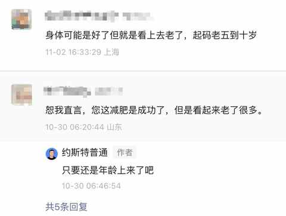
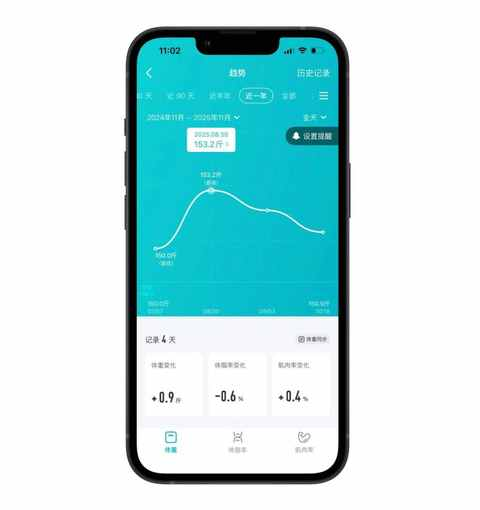
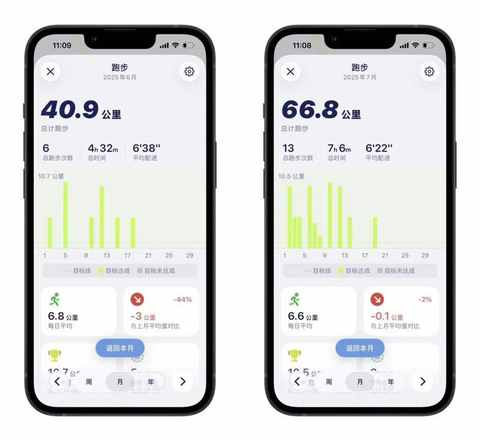
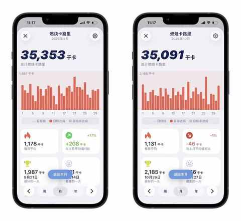
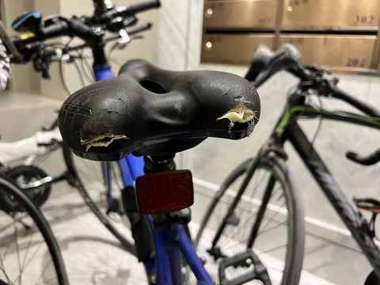
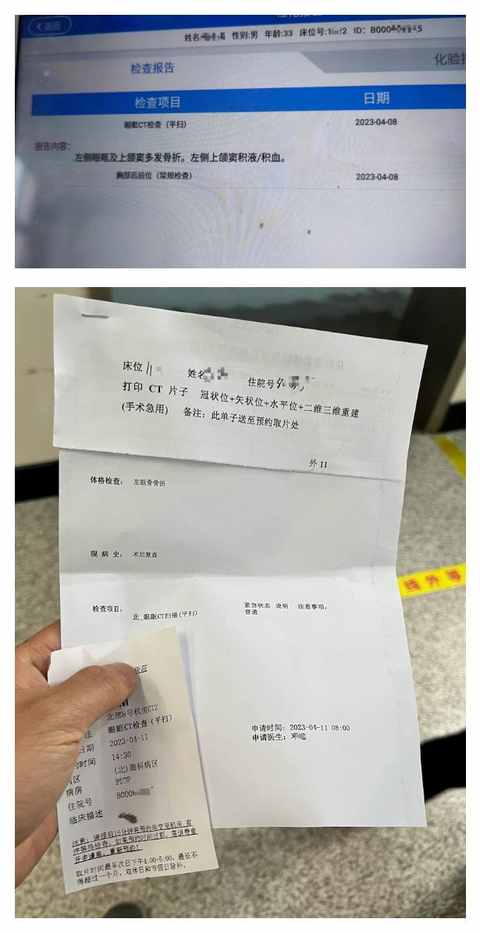

中年减肥成功2年后，才发现运动形式真不重要，守住这3点才能不反弹！
一、两年未反弹
我身高177cm，从体重最大的时候大约是 91kg，到现在日常维持在 75kg 左右，总计减掉 30 多斤的体重，同时因为规律作息和运动，身体状态比以往更好。
1️⃣ 运动不会让人变老
在此也回应一下之前文章中的留言，主要是说看上去老了很多的，不希望大家 看到我的图，觉得运动会让人变得比实际年龄老不少 。
中年减肥成功2年后，才发现维持体重靠的不是毅力，而是这5个微习惯

主要是这 3 个因素导致的：
1）照片光线不足
在光线不足的情况下会显得皮肤状态不好，看着就年龄偏大一些。
2）户外运动偏多
刚开始跑步和骑行的时候很不注意防晒，后面有晒斑出现之后，才决定买防晒霜，然后跑步和骑行的时候也会 戴帽子和眼镜
大家在户外运动的时候一定要注意防晒！
3）个人长相是显老的类型
这个就没有办法了，天赋如此，高中的时候有一次在教室门口路过，还在吵闹的班级瞬间就安静了下来，直到我进教室他们才发现不是老师
我想表达的是： 运动不背变老的锅！紫外线才是隐形衰老加速器 。
2️⃣ 谁都怕体重反弹
所有减重过的人都怕反弹，因为反弹可太容易了，只要有一阵子多吃了点，少动了些， 体重秤像冷酷的考官， 会毫无留情的在你称重的时候告诉你：你比前阵子多了几斤几两！

体重有波动实属正常，六七八三个月，气温高又是暑期，疏于运动后体重到了 153.2 斤，也是今年的新高。

待开学后，注意饮食和增加运动时间，体重也很快回到 150 斤。

通过这两年多的不断试错，才发现 运动形式真不重要， 守住下面这3点才能让体重不反弹！
二、守住这 3 点
1️⃣ 不受伤
运动这件事和生活中的其他事情一样，安全永远是第一位的。
只有在安全的前提下，才能不受伤、，进而多多尝试各种运动形式，然后选择一个感兴趣且能坚持下来的。
且用我经历的一次事故，作为一个反面教材给大家做一个参考：
这次事故让我付出5万元医疗费+1个月静养不运动的代价，体重也反弹几斤。
在 2023 年的 4 月份，当时刚养成饭后骑行的习惯。
虽然当天风很大还下雨了，但是中午吃饭的时候已经停了，由于风挺大地面很快被吹干，按捺不住想运动的心，出去骑行了。
出发的时候我便已经犯了3 个错，造成了后面的事情：
1）没有戴头盔
2）未检查自行车轮胎的气是否充足
3）大风天不适合骑行
三重安全疏忽埋下祸根 ，一个意外的单车事故在我身上发生：
在自行车压到一个小坑的时候，我先飞了出去然后自行车也翻了过来，我脸先着地，眉骨处鲜血直流，自行车是坐垫着地。

最终的检查结果是眼眶骨折，好在及时入院做了手术，不幸中的万幸，没有影响到视力，后续恢复也很顺利。

出院后，我第一时间去派出所查看了当时事发路段的监控录像。我和民警都感叹当时如果戴了头盔就只是皮外伤，安全意识要排第一位。
2️⃣ 多尝试
哪项运动更适合你，大脑和身体都会告诉你，每次运动完虽然累但身心愉悦。
我们需要做的是尽量多的尝试不同的运动形式：跑步、骑行、跳绳、爬楼梯、快步走、撸铁、羽毛球、篮球、乒乓球……
燃脂效率比拼：9种运动一年的热量消耗分析
你之前或许运动的比较少，很可能是尝试的运动偏少，没有遇到自己喜欢的类型。
随着时间的推移，每个人倾向的运动也会产生变化，我经过从骑行和跑步都进行变成跑步为主的运动安排。
跑步 or 骑行：一年有氧运动的个人体验与建议
从骑行转到跑步：一个中年人两年有氧运动的变化
3️⃣ 坚持住
只有在不受伤的情况下，才能尽量多的去尝试各种运动，然后找到一个或多个感兴趣的运动形式。
这样，能大大降低坚持运动的难度，从而慢慢做到规律的运动。
只需要偶尔调动意志力，在不想动的时候让自己动起来。
三、结语
所以，减肥是短跑，维持体重是马拉松。
而我守住阵地的“ 秘诀 ”， 并非依靠意志力死守， 无非就是这朴素的九字真言：不受伤、多尝试、坚持住， 为自己构建了一套 健康的生活习惯 。
当这些习惯成为本能，稳住体重便是水到渠成的事。
希望我的这些经历能给你带来一点点启发。你在维持体重的路上，有什么独门心得吗？欢迎在评论区分享！
近期文章
我的两个配图利器：两个APP强强联合，实现1+1 > 2的视觉升级
中年初跑者增加跑量两个月后，对如何选跑鞋有了 3个新思考
别慌！和所有Intel版Mac用户共享：3个让我们继续用的理由和2个续命秘籍
老车主看了极氪7X的焕新版之后：情绪稳定！
中年减肥成功2年后，才发现这5个坑当初要是有人点醒我该多好！
日更的第60天，我似乎掉进“选题陷阱”：面对500+备选题，下笔反而更难？！
中年减肥成功2年后，才发现维持体重靠的不是毅力，而是这5个微习惯
一个中年男人消费观的 3 个转变
8年驾龄复盘：新手期的每一次手忙脚乱，都成了现在我安全驾驶的“肌肉记忆”
一个中年人的2025年桐庐半马赛后复盘：我的 5 个收获